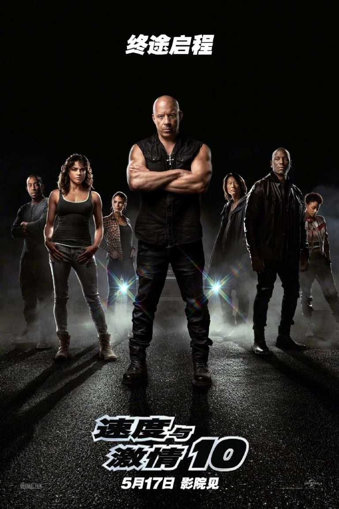
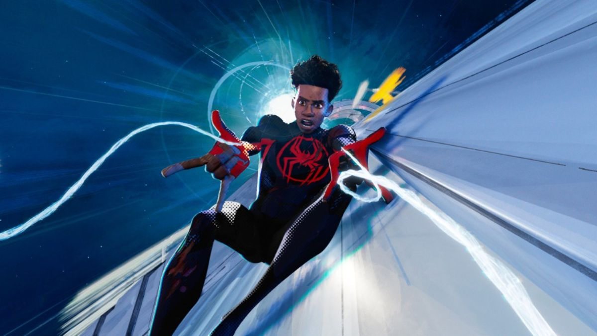
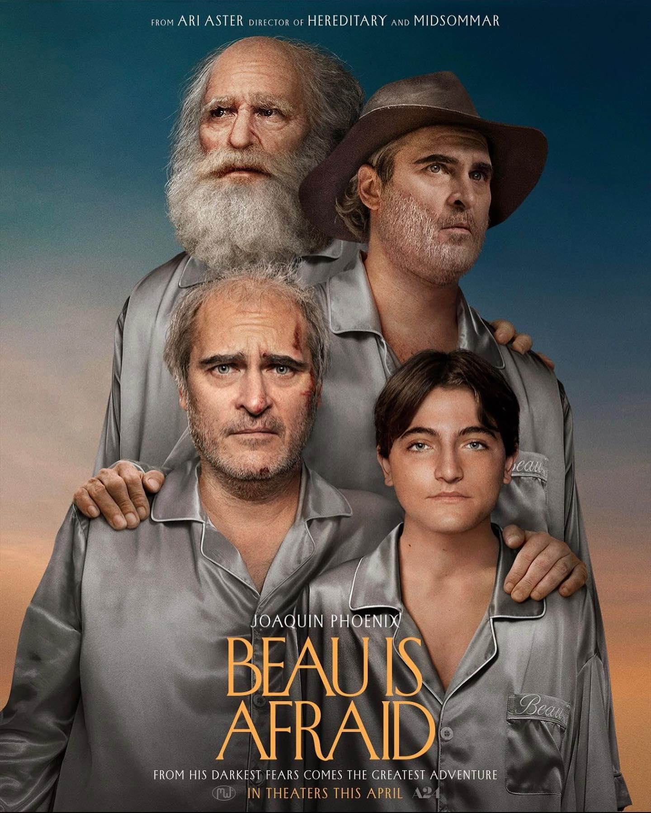
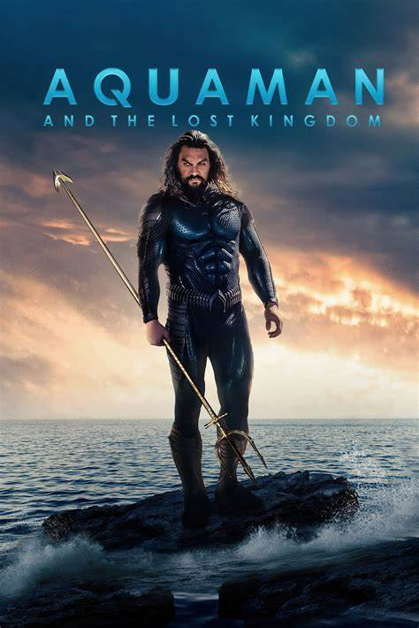
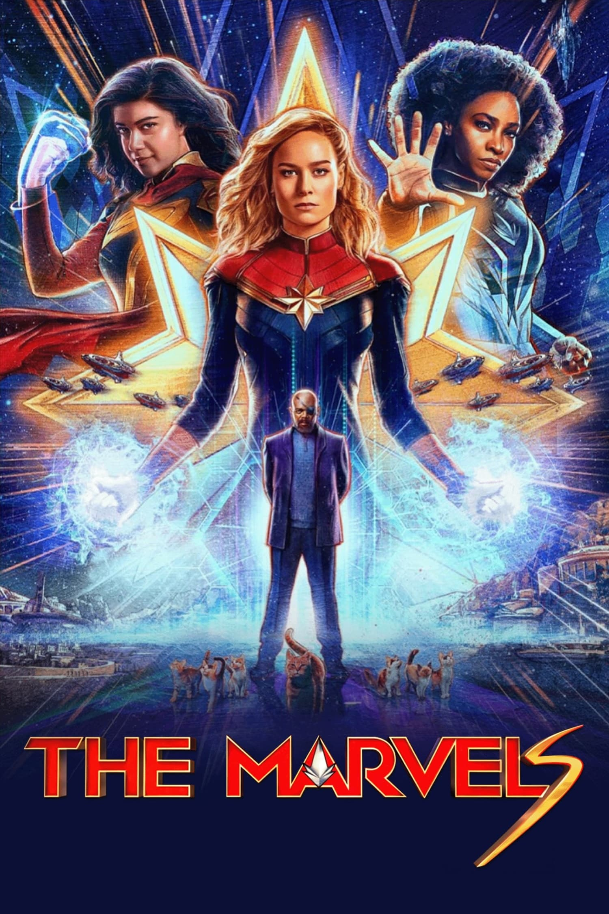

Disfruta de miles de películas y series de todos los géneros, desde clásicos atemporales hasta los últimos estrenos.
Descubre nuestras exclusivas series y películas originales, creadas por los mejores talentos de la industria.
Nuestro algoritmo inteligente te recomendará contenido que se adapte a tus gustos y preferencias.
Crea perfiles para cada miembro de tu familia y disfruta de una experiencia personalizada para cada uno.
Mira CineClub en tu Smart TV, computadora, teléfono móvil o tableta. Descarga tus películas y series favoritas para verlas sin necesidad de conexión a internet.
Ofrecemos planes de suscripción flexibles para que elijas el que mejor se adapte a tus necesidades.

Rapidos y Furiosos X
Aventuras llenas de adrenalina, persecuciones de autos, robos y espionaje, donde la familia, la lealtad y la amistad son valores fundamentales.
Se enfrentan a diversos villanos mientras viajan por el mundo, viviendo emocionantes historias.

Spider-Man: A través del Spider-Verso (Parte Uno)
Esta película animada de superhéroes es la secuela de la exitosa película Spider-Man: Un nuevo universo (2018). Cuenta la historia de Miles Morales mientras se aventura a través del multiverso para encontrar a otros Spider-Man y detener a una nueva amenaza. La película ha sido elogiada por su animación, historia y acción.

Beau is Afraid
Esta película de terror experimental es la última película del director de culto Alex Garland. Cuenta la historia de un hombre llamado Beau que intenta llegar a casa para el funeral de su padre. La película ha sido elogiada por su estilo visual único, su atmósfera y su actuación principal.

Aquaman and the Lost Kingdom
Esta película de superhéroes es la secuela de la película Aquaman de 2018. Cuenta la historia de Aquaman mientras lucha contra una nueva amenaza para el reino submarino de Atlantis. La película está protagonizada por Jason Momoa, Amber Heard y Patrick Wilson, y ha sido elogiada por sus efectos visuales, sus secuencias de acción y su actuación principal.
Decision to Leave
Este thriller psicológico surcoreano trata sobre un detective que investiga la muerte de un hombre. A medida que profundiza en el caso, comienza a desarrollar sentimientos por la esposa del hombre muerto. La película ha sido elogiada por su suspenso, su dirección y sus actuaciones.

The Marvels
Esta película de superhéroes es la secuela de la película Capitana Marvel de 2019. Cuenta la historia de la Capitana Marvel mientras se une a Monica Rambeau y Kamala Khan para luchar contra una nueva amenaza. La película está protagonizada por Brie Larson, Teyonah Parris e Iman Vellani, y ha sido elogiada por su elenco diverso, su dirección y sus escenas de acción.